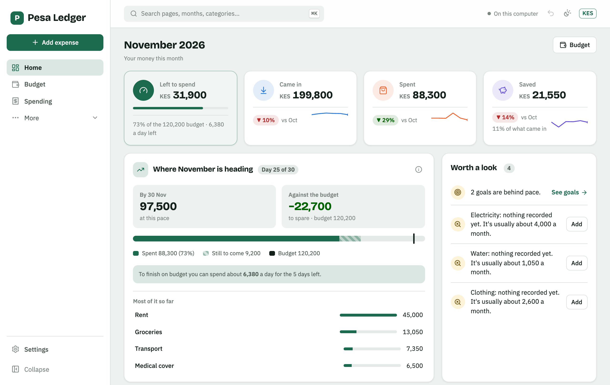
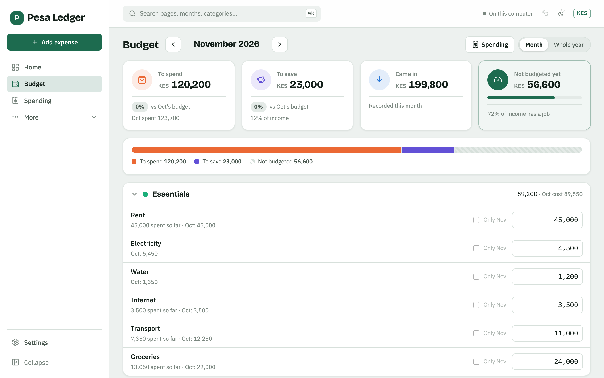
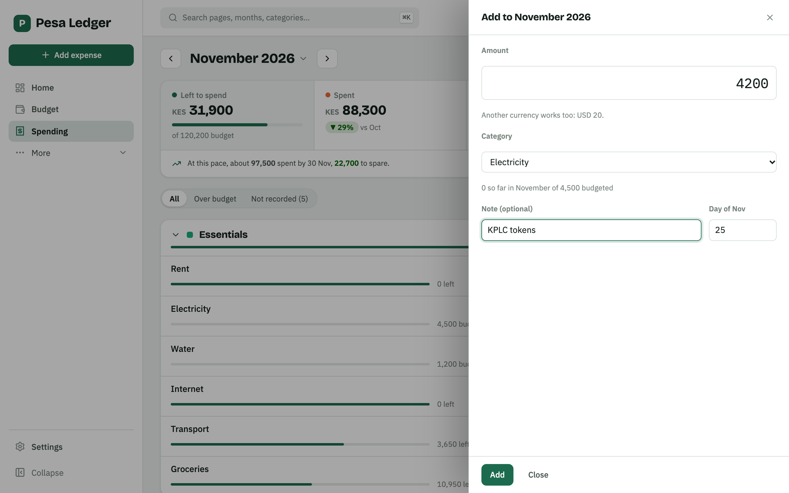
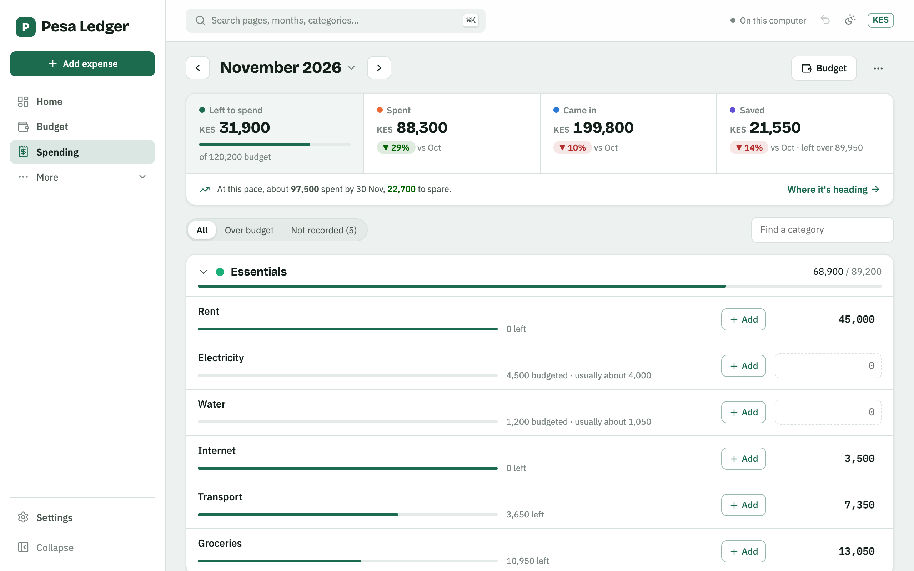
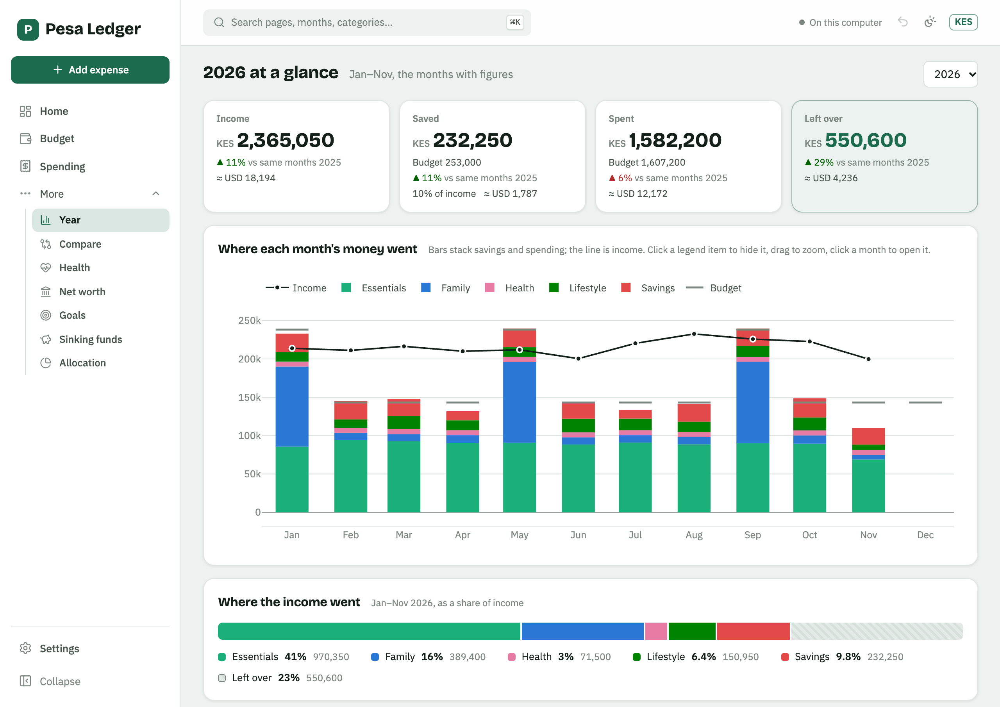
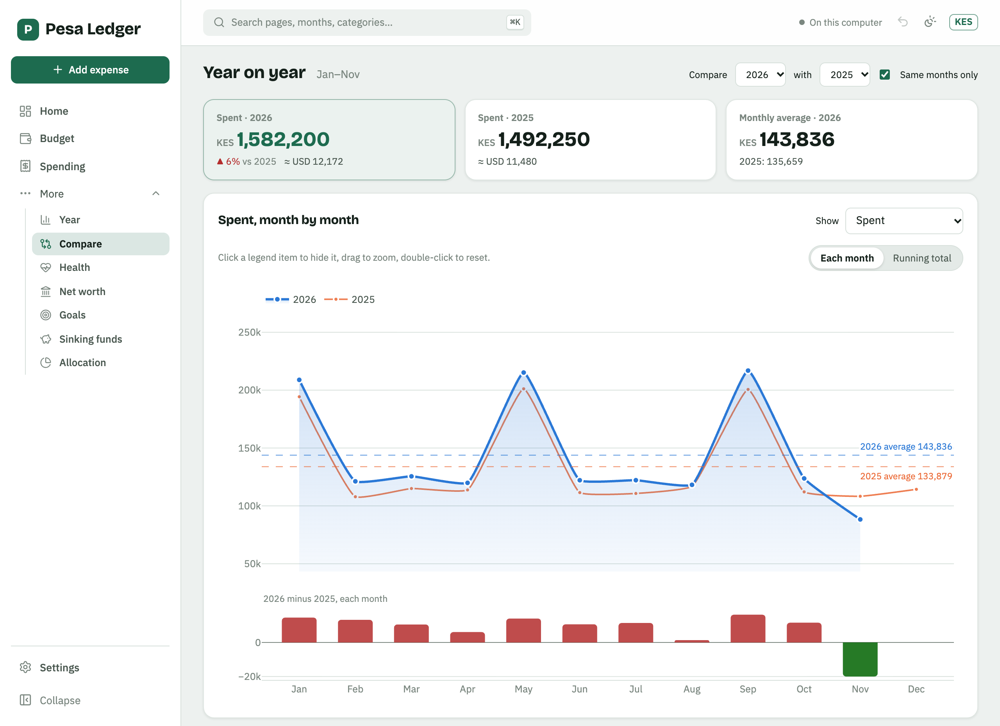
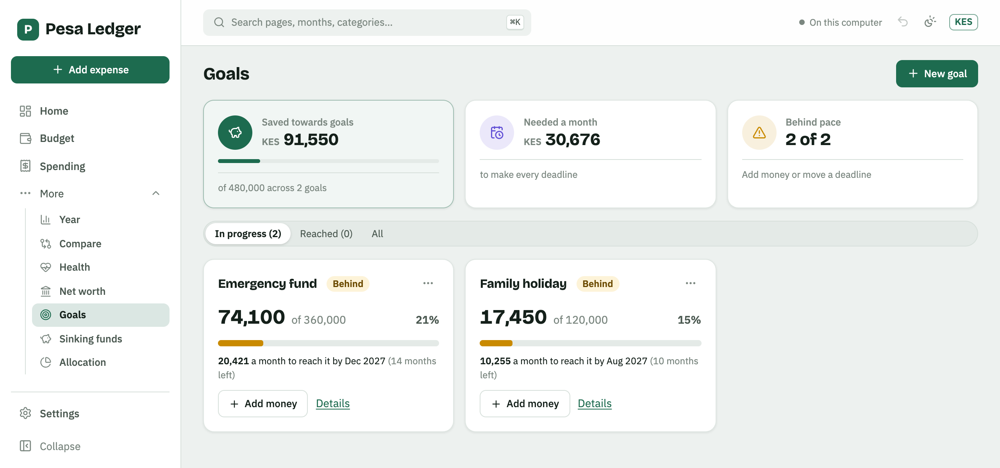

Your figures stay with you
The ledger runs on your own computer and keeps its files in a folder only you can read.
Know where the month is heading
Home shows what is left to spend and what you will have spent by month end at the current pace.
See change over time
Look back over a whole year, or put this year next to last year, month by month.
A walk through Pesa Ledger
The household in these screens is made up. Follow it from planning a month to saving for something bigger.
-
Decide what each month's money is for
Open Budget and type an amount for each category, such as rent, groceries or the emergency fund. The amount applies to every month unless you tick Only Nov for a one-month cost like school fees. The cards at the top show how much is for spending, how much is for saving, and how much of your income has no job yet.

-
Add an expense when you spend
Press Add expense, type the amount, pick the category and, if you like, add a short note such as "KPLC tokens". The amount is added to that category's total for the month, and you can take it back out later. You can also type a category's total for the month straight into its box.

-
Check the month on Spending
The Spending page lists every category with a bar showing what has been spent against its budget. Under the cards, a line tells you where the month is heading at the current pace. Use Over budget or Not recorded to see only the rows that need attention.

-
Look back over the year
Open More, then Year. Each month is a bar showing where the money went, with a line for income on top. Below it, one strip shows how the year's income was shared out between groups, and a table lists every category for every month.

-
Compare this year with last
Choose Compare, then pick any two years. A line chart sets the months side by side, and the bars underneath show the gap each month. A list further down names the categories that changed most. The latest month is still in progress, so it looks lower until the month is done.

-
Save towards a goal
On Goals, press New goal, give it a name, a target and a date, and link it to a savings category. Whatever you record in that category counts towards the goal. Each goal shows how far along it is, what you need to put aside each month, and whether you are behind.

Get Pesa Ledger
Runs on a Mac or a Windows computer. Your figures are saved in a folder in your home folder, and nothing is uploaded.
- Download the zip for your computer from the releases page:
Pesa-Ledger-<version>-mac.ziporPesa-Ledger-<version>-windows.zip. - On a Mac: double-click the zip, open the Pesa Ledger folder and double-click Install Pesa Ledger. If macOS says it cannot be opened, right-click it, choose Open, then Open again.
- On Windows: right-click the zip, choose Extract All, open the Pesa Ledger folder and double-click Install Pesa Ledger. If Windows shows "Windows protected your PC", click More info, then Run anyway.
- Wait a few minutes while the first install downloads about 150 MB. You do not need a password or administrator rights.
- Pesa Ledger opens in your browser. Next time, open it from Applications (Mac) or the Start menu or Desktop shortcut (Windows), then choose how to start: standard categories, your own, example figures, or a spreadsheet you already keep.